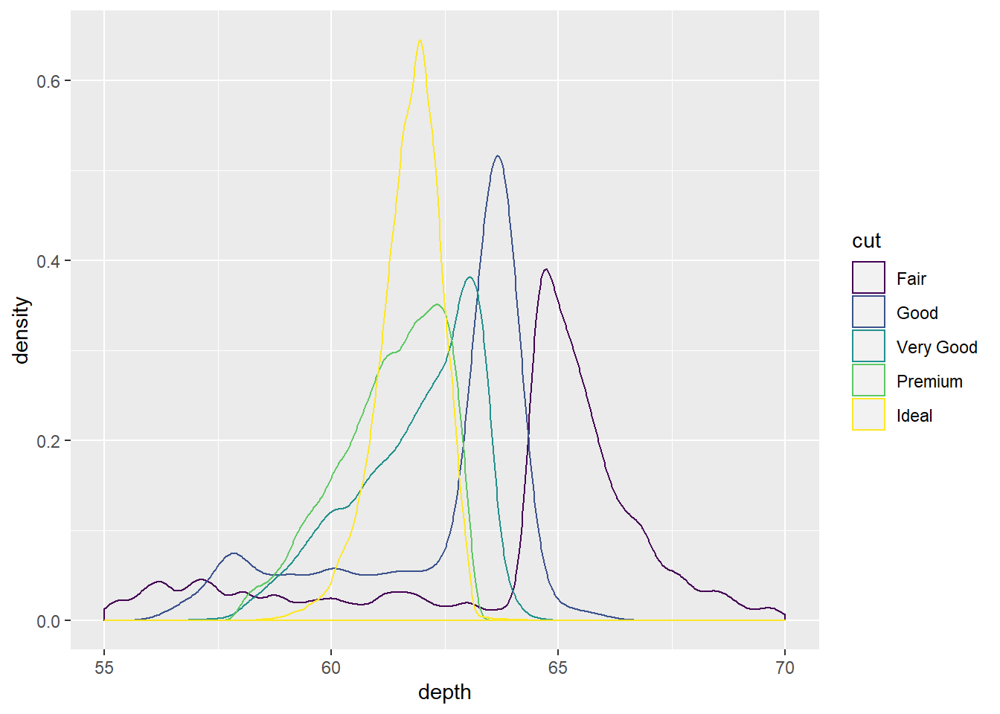
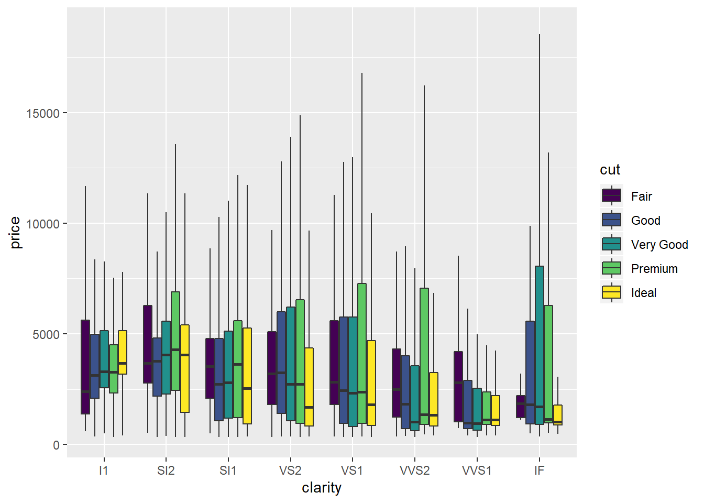
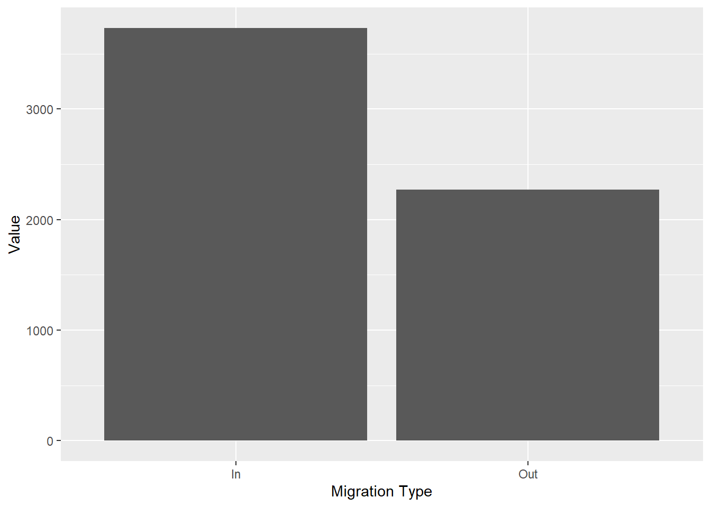

Chapter 7 Data Visualisation 1
Intended Learning Outcomes
- Develop an understanding of the basics of ggplot2 and how layering works
- Learn how to make simple two layer plots
- Learn how to make plots with more than 2 layers
- Learn how to create groups in plots
- Learn how to make a variety of plots based on the type of variables we have
7.1 Pre-steps
Today, we will be working with ggplot2 which is part of tidyverse and data from the Scottish Government saved in the file free_movement_uk.csv. Load tidyverse into the library and read the data into our Global Environment as migration_scot.
library(tidyverse)
migration_scot <- read_csv("free_movement_uk.csv") #downloaded from the Scottish Government Stats website7.2 Introduction to the data
This data is provided freely from the Scottish Government, and it introduces the flow of people at different ages and sex into and out of the Scotland. We have several variables to work with:
| Variable | Description |
|---|---|
| FeatureCode | Codes given by the Scottish Government |
| DateCode | Year of data collected |
| Measurement | What type of measurement it is (here we have only counts) |
| Units | Units (here we have only people) |
| Value | The actual counts |
| Age | Age of the counted people (separate age, and total) |
| Sex | Sex of the counted people (separate sex, and total) |
| Migration Source | Where the people are coming from (Overseas, RUK) |
| Migration Type | Whether people are coming or leaving (In, Out, and Net) |
The data is a bit messy, so let’s clean it a little bit before we can work with it.
7.2.1 Some warm-up tasks
- Keep only the total number of people by
Age(‘All’) - Keep only the necessary variable -
DateCode,Value,Sex,Age,Migration Source&Migration Type(notice that some variable names include spaces) - Filter the data in column
Year, and keep only observations from 2016 - Keep only the information about the number of people that came into and left Scotland (we do not want to know about the net value)
traffic_scot <- migration_scot %>%
filter(Age == 'All') %>%
select(DateCode, Value, Sex, `Migration Source`, `Migration Type`) %>%
filter(DateCode == '2016', `Migration Type` != 'Net', Sex != 'All')7.3 The package GGPLOT2
We use the ggplot2 package due to its ease of layering and variety. The ggplot2 package allows us to create beautiful and various plots that can show us much more than just the simplicities of the base R plots.
7.4 Layering
Plots created with ggplot work by using layers. In the simplest form we have two layers.
- Layer 1: what data are we going to use
- Layer 2: how do we want it to look
Layer 1: ggplot(data, aes(x,y, …)) +
Layer 2: geom_something(…)
7.4.1 Layer 1
Plots always start with ggplot(). This initialises the plot. It is used to tell R what data we are going to use. We can also set the aesthetics of the plot which will be used to specify the axes we are going to use, any groupings, variables we are going to colour based on, etc. Unless specifically overwritten in the following layers, all the data information you give in this first layer will be inherited in everything else you do.
For now we are going to stick with one global specification - i.e. we are going to specify all our data in this first layer.
If you run just the first command, R is going to show you the first layer - i.e. a blank screen.
Let’s try it quickly. Uncomment the command below and see what appears in the ‘Plots’ section.
ggplot()
Now let’s add some information. Let’s include the data and the axes. From our data we want to put sex on the x axis and value on the y axis.
What’s the difference?
ggplot(traffic_scot, aes(x = Sex, y = Value))
What is the difference between the above two lines? What does the first layer give you?
7.4.2 Layer 2 and onwards
From the second layer onwards, we are specifying what we want our plot to look like: from the type of graph to the titles and colours. For now we are going to stick with the basics.
7.5 How do we choose the type of plot?
There are numerous plots we can choose, and we are going to try several today.
Before plotting we need to know what types of data we want to portray.
Depending on whether our data is discrete or continuous will change what type of plot is most appropriate.
7.5.1 Types of data
7.5.1.1 Continuous
Continuous data is that which there are no bounds and the distance between any two consecutive points is equivalent to the distance between any other two consecutive points - i.e. the difference between 1 and 2 is the same as the difference between 3 and 4, or 5 and 6 etc.
7.5.1.2 Discrete
Discrete data, simply put, groups data. The data in each group or category vary solely on one characteristic and usually those characteristics cannot be ranked - i.e. sex, race, nationality etc.
7.5.2 Number of variables
Next we need to know the relationship between how many variables we want to show. In a 2D plot, we can usually graphically show between 1 and 3 variables with ease. After that, more than 2 dimensions are necessary.
Tip: Most of the time, if you cannot represent a graph in 2D then you are probably trying to show too much, and you should reconsider splitting the graphs
See the five plots below. What type of data are used? How many variables do we need?

2 variables: 1 continuous, 1 categorical

3 variables: 2 discrete, 1 continuous

2 variables: 1 discrete, 1 continuous

2 variables: 2 continuous

3 variables: 2 continuous, 1 discrete
Let’s get back to our free movement data.
What types of data are we trying to plot? Continuous, discrete, or both?
We are using both continuous (value or count of people) and discrete (sex).
How many variables have we chosen so far? Type the number in the box below.
Create a column or a bar plot to show the data use geom_col(). How does the data look like?
ggplot(traffic_scot, aes(x = Sex, y = Value)) +
geom_col()
Do we need to use another variable to clarify the situation? If yes, which one?
If you worked in the emigration office, you would want to know how many people left and how many people came into Scotland. Knowing how many people moved about is not particularly informative. In what ways can we differentiate the males and females who came into and who went out of Scotland?
7.5.3 Groupings
When we want to group data to provide a better representation, we can usually use colour, shapes etc. Most of the time this will depend on the type of graph we want to use. If we are using line graphs, then colours are usually best. If we are using dot plots then we can use the shape as well as the colours to differentiate the different groups.
Let’s first look at colour.
Depending on the type of graph, colouring in can be done either with colour or with fill. For our column plots we use fill.
ggplot(traffic_scot, aes(x = Sex, y = Value, fill = `Migration Type`)) +
geom_col(position = 'dodge') Let’s decompose the code above:
Let’s decompose the code above:
We have our data and our two variables. They are the same as before. This time we are saying that we want the data to be separated even further by Migration Type.
Simple task:
-
Remove
position =‘dodge’from the geom and describe what happens in your stub file.
ggplot(traffic_scot, aes(x = Sex, y = Value, fill = `Migration Type`)) +
geom_col()
We have also added position = 'dodge' in the geom_col(). This makes sure that any groupings we create and create new columns are then presented separately.
Simple task: 1. Use position = ‘fill’ and describe what happens in your stub.
# create your plot here
ggplot(traffic_scot, aes(x = Sex, y = Value, fill = `Migration Type`)) +
geom_col(position = 'fill')
The argument position is an argument specific for the geom_col. It is just one example of an additional argument that helps us to represent the data better. These types of arguments allow for better control over the plots that we create.
Geoms in ggplot2 have a large selection of arguments to allow you to adjust your visualisations. This is what makes it one of the most preferred visualisation packages by the R community.
7.5.3.1 More groupings
Now let’s consider that we want to know whether the individuals are moving to/from Overseas or RUK as well as all the information we have so far. Should we create more groups? Let’s try.
ggplot(traffic_scot, aes(x = Sex, y = Value, fill = `Migration Type`, shade =`Migration Source`)) +
geom_col(position = 'dodge')
Here I have used the argument colour to give different borders to the migration sources. As you can see, this makes it much more difficult to see. Next week, we will work on separating the plots.
Would you think there is a better way to represent the data? Write it down in your stub file.
7.6 Now lets have a look at different plots with more complexity
Imagine you want to see the difference in the number of people coming into and moving out of Scotland from both the RUK and Overseas throughout the years.
What variables would you use? Write them down in your stub file.
DateCode, Migration Type, Migration Source, Value
# First, let's get the data we will need
# We want our chosen variables, and the overall data for the rest
traffic_scot2<- migration_scot %>%
filter(Age == 'All') %>%
select(DateCode, Value, Sex, `Migration Source`, `Migration Type`) %>%
filter(`Migration Type` != 'Net', Sex == 'All')What type of data are these variables?
- DateCode:
- Value:
- Sex:
- Migration Source:
- Migration Type:
So we need to use a different type of plot - one that can portray continuous data well enough.
Good way to portray data like this are point graphs and line graphs.
We have several variables again. It will help if we separate them with different aesthetics.
ggplot(traffic_scot2, aes(DateCode, Value, shape = `Migration Source`, colour = `Migration Type`)) +
geom_point() 
This seems difficult to look at. Let’s make it easier by adding a line that connects the data. We can do this by adding another Layer.
ggplot(traffic_scot2, aes(DateCode, Value, shape = `Migration Source`, colour = `Migration Type`)) +
geom_point() +
geom_line()
Question: How do we know that the line graph is going to connect the Migration Type and not the Migration Source?
If we look up geom_point and geom_line we can see the type of aesthetics that they take. Look them up in the Help tab or by using ?geom_point(). There you will find a section called aesthetics, which will tell you the aesthetics each of them can have. Because lines cannot use an aesthetic of shape, it will only inherit the colour aesthetic from ggplot.
Dot plots are excellent representations of the data as they show us where each data point is. In this way no data can hide behind a bar chart.
7.6.1 Other plots
Let’s make some more plots.
Violin plots and Box plots We need a continuous variable and a categorical variable for both of them.
Let’s get back to the original data and plot the distribution of all females entering and leaving Scotland from overseas.
For this, we need to tidy the data into what we need.
boxes <- migration_scot %>%
filter(Sex == 'Female',
`Migration Source` == 'To-from Overseas',
Age == 'All',
`Migration Type` != 'Net')
# make box plots
ggplot(boxes, aes(x = `Migration Type`, y = Value)) +
geom_boxplot()
#make violin plots
ggplot(boxes, aes(x = `Migration Type`, y = Value)) +
geom_violin()
These plots show us the distribution of females entering and leaving Scotland. What we can tell that over the years, we haven’t have less than 12000 women coming to Scotland and no more than 16000 women leaving. These types of plots also tell us where the bulk of the data are. We can see from the violin plots that the most common number of females coming into Scotland throughout the years is between 22000 and 18000. Boxplots on the other hand, tell you where the middle 50% of the data are.
Your turn
Using the data for this class follow the instructions.
- Select two different years.
- Select two different age groups.
- Select the total for both sex ( i.e. ‘all’).
- Select migration In and Out of Scotland.
-
Pick whether you are going to look at
To-from Rest of UKorTo-from Overseas. - Plot the overall people, regardless of age and year, that have moved into and left Scotland.
- Plot the differences between the two years you have selected, regardless of age.
- Plot the differences between the two ages, regardless of year.
- Pick any variables and create a plot that tells a story.
# Example answer
traffic_scot <- read_csv("free_movement_uk.csv") #download from the Scottish Government Stats website## Parsed with column specification:
## cols(
## FeatureCode = col_character(),
## DateCode = col_double(),
## Measurement = col_character(),
## Units = col_character(),
## Value = col_double(),
## Age = col_character(),
## Sex = col_character(),
## `Migration Source` = col_character(),
## `Migration Type` = col_character()
## )formative <- traffic_scot %>%
filter(Age %in% c('21 years', '41 years')) %>%
select(DateCode, Value, Age, Sex, `Migration Source`, `Migration Type`) %>%
filter(DateCode %in% c('2013', '2018'),
`Migration Type` != 'Net',
`Migration Source` == 'To-from Overseas',
Sex == 'All')
q6 <- ggplot(formative, aes(`Migration Type`, Value)) +
geom_col()
q6
q7 <- ggplot(formative, aes(`Migration Type`, Value, fill = as.character(DateCode))) +
geom_col(position = 'dodge')
q7 
q8 <-ggplot(formative, aes(`Migration Type`, Value, fill = Age)) +
geom_col(position = 'dodge')
q8
7.7 Formative Homework
The formative homework for this week can now be found on moodle.